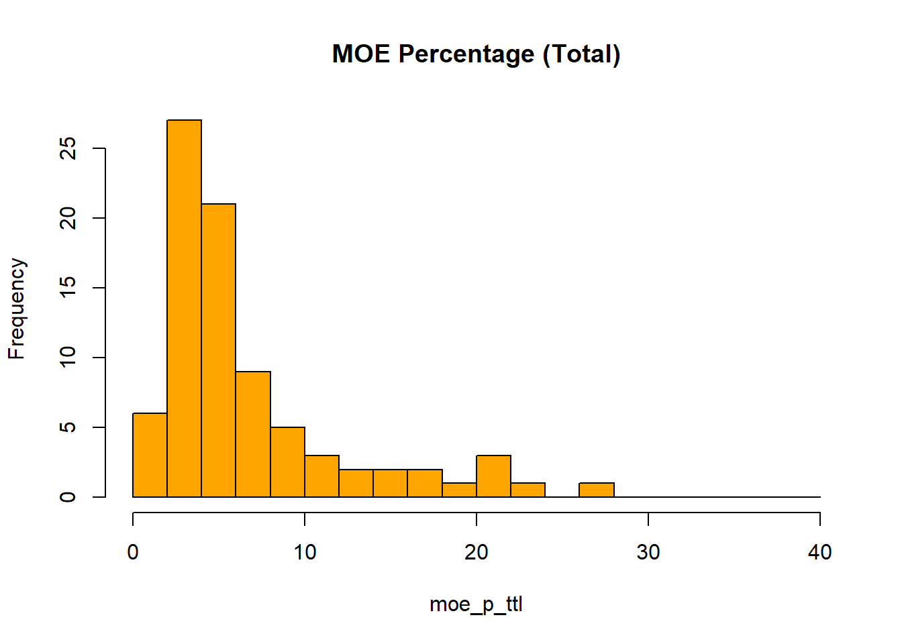
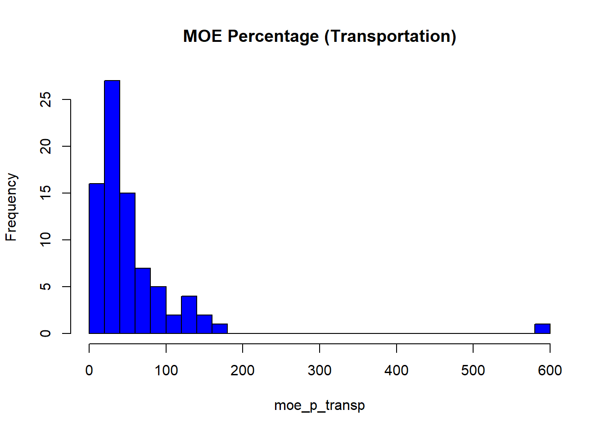

library(tidyverse)
library(tidycensus)Assignment 2: Who Do We Know the Least About?
Measuring uncertainty in American Community Survey data
Setup
The question
In the following report, I will be investigating commuting patterns by race/ethnicity via public transportation in New Jersey, and ask which counties and ethnicities are measured most and least reliably. Since I will specifically be paying attention to margin of error, I cannot directly calculate percentage of people who commute via public transportation, and so will rely on the absolute number and will use total commuters by race/ethnicity as a point of comparison.
Choosing what to measure
vars <- load_variables(2023, "acs5")
View(vars)
NJ <- "NJ"
variables <- c(
total_white = "B08505H_001",
transp_white = "B08505H_004",
total_black = "B08505B_001",
transp_black = "B08505B_004",
total_asian = "B08505D_001",
transp_asian = "B08505D_004",
total_hisp = "B08505I_001",
transp_hisp = "B08505I_004",
pop = "B01003_001")Pulling the data
county_data <- get_acs(
geography = "county",
variables = variables,
state = "NJ",
year = 2023,
survey = "acs5",
output = "wide"
)Let’s look at what came back.
dim(county_data)[1] 21 20head(county_data)# A tibble: 6 × 20
GEOID NAME total_whiteE total_whiteM transp_whiteE transp_whiteM total_blackE
<chr> <chr> <dbl> <dbl> <dbl> <dbl> <dbl>
1 34001 Atla… 72236 1962 684 162 17436
2 34003 Berg… 234006 3613 2371 395 36715
3 34005 Burl… 136774 2930 531 248 33962
4 34007 Camd… 136011 3037 1239 239 35323
5 34009 Cape… 35196 1260 190 88 2131
6 34011 Cumb… 33613 1292 198 109 8413
# ℹ 13 more variables: total_blackM <dbl>, transp_blackE <dbl>,
# transp_blackM <dbl>, total_asianE <dbl>, total_asianM <dbl>,
# transp_asianE <dbl>, transp_asianM <dbl>, total_hispE <dbl>,
# total_hispM <dbl>, transp_hispE <dbl>, transp_hispM <dbl>, popE <dbl>,
# popM <dbl>New Jersey has 21 counties; Originally, my data frame had 168 rows, as it was “long” data and therefore had a row for every variable within a county. However, I then pulled it as “wide” data using the “output” command so that there there would be one row per county and the variables would be columns.
How big is the margin of error?
A margin of error of 3,000 means something very different for an estimate of 20,000 than for an estimate of 200,000. To compare across places, I calculated it as a percentage.
county_data <- county_data %>%
mutate(
moe_p_ttl_white = total_whiteM / total_whiteE *100,
moe_p_transp_white = transp_whiteM / transp_whiteE *100,
moe_p_ttl_black = total_blackM / total_blackE *100,
moe_p_transp_black = transp_blackM / transp_blackE *100,
moe_p_ttl_asian = total_asianM / total_asianE *100,
moe_p_transp_asian = transp_asianM / transp_asianE *100,
moe_p_ttl_hisp = total_hispM / total_hispE *100,
moe_p_transp_hisp = transp_hispM / transp_hispE *100)I then organized the data by least to most reliable by each ethnicity/race and listed the least reliable in each category at the end.
#Total White
county_data %>%
arrange(desc(moe_p_ttl_white)) %>%
select(NAME, total_whiteE, total_whiteM, moe_p_ttl_white) %>%
head(10)# A tibble: 10 × 4
NAME total_whiteE total_whiteM moe_p_ttl_white
<chr> <dbl> <dbl> <dbl>
1 Salem County, New Jersey 17835 963 5.40
2 Warren County, New Jersey 29708 1215 4.09
3 Cumberland County, New Jersey 33613 1292 3.84
4 Cape May County, New Jersey 35196 1260 3.58
5 Sussex County, New Jersey 38922 1344 3.45
6 Hunterdon County, New Jersey 43888 1343 3.06
7 Atlantic County, New Jersey 72236 1962 2.72
8 Passaic County, New Jersey 81897 2131 2.60
9 Hudson County, New Jersey 106537 2535 2.38
10 Gloucester County, New Jersey 90905 2063 2.27#White Transportation
county_data %>%
arrange(desc(moe_p_transp_white)) %>%
select(NAME, transp_whiteE, transp_whiteM, moe_p_transp_white) %>%
head(10)# A tibble: 10 × 4
NAME transp_whiteE transp_whiteM moe_p_transp_white
<chr> <dbl> <dbl> <dbl>
1 Salem County, New Jersey 34 28 82.4
2 Sussex County, New Jersey 129 102 79.1
3 Hunterdon County, New Jersey 173 125 72.3
4 Warren County, New Jersey 69 38 55.1
5 Cumberland County, New Jersey 198 109 55.1
6 Burlington County, New Jersey 531 248 46.7
7 Cape May County, New Jersey 190 88 46.3
8 Somerset County, New Jersey 491 210 42.8
9 Ocean County, New Jersey 621 251 40.4
10 Gloucester County, New Jersey 564 225 39.9#Total Black
county_data %>%
arrange(desc(moe_p_ttl_black)) %>%
select(NAME, total_blackE, total_blackM, moe_p_ttl_black) %>%
head(10)# A tibble: 10 × 4
NAME total_blackE total_blackM moe_p_ttl_black
<chr> <dbl> <dbl> <dbl>
1 Sussex County, New Jersey 1646 374 22.7
2 Warren County, New Jersey 2161 456 21.1
3 Hunterdon County, New Jersey 2090 399 19.1
4 Cape May County, New Jersey 2131 344 16.1
5 Salem County, New Jersey 3836 574 15.0
6 Cumberland County, New Jersey 8413 755 8.97
7 Gloucester County, New Jersey 15852 1380 8.71
8 Ocean County, New Jersey 7150 598 8.36
9 Somerset County, New Jersey 20800 1519 7.30
10 Monmouth County, New Jersey 18721 1249 6.67#Black Transportation
county_data %>%
arrange(desc(moe_p_transp_black)) %>%
select(NAME, transp_blackE, transp_blackM, moe_p_transp_black) %>%
head(10)# A tibble: 10 × 4
NAME transp_blackE transp_blackM moe_p_transp_black
<chr> <dbl> <dbl> <dbl>
1 Sussex County, New Jersey 4 7 175
2 Hunterdon County, New Jersey 4 6 150
3 Warren County, New Jersey 27 33 122.
4 Cape May County, New Jersey 171 160 93.6
5 Cumberland County, New Jersey 226 188 83.2
6 Salem County, New Jersey 58 43 74.1
7 Ocean County, New Jersey 105 77 73.3
8 Burlington County, New Jersey 642 301 46.9
9 Somerset County, New Jersey 718 335 46.7
10 Monmouth County, New Jersey 384 161 41.9#Total Asian
county_data %>%
arrange(desc(moe_p_ttl_asian)) %>%
select(NAME, total_asianE, total_asianM, moe_p_ttl_asian) %>%
head(10)# A tibble: 10 × 4
NAME total_asianE total_asianM moe_p_ttl_asian
<chr> <dbl> <dbl> <dbl>
1 Cape May County, New Jersey 939 261 27.8
2 Warren County, New Jersey 1356 293 21.6
3 Cumberland County, New Jersey 1159 234 20.2
4 Sussex County, New Jersey 1330 203 15.3
5 Hunterdon County, New Jersey 3085 390 12.6
6 Gloucester County, New Jersey 5725 590 10.3
7 Ocean County, New Jersey 5681 492 8.66
8 Burlington County, New Jersey 12456 831 6.67
9 Atlantic County, New Jersey 8651 575 6.65
10 Passaic County, New Jersey 12807 773 6.04#Asian Transportation
county_data %>%
arrange(desc(moe_p_transp_asian)) %>%
select(NAME, transp_asianE, transp_asianM, moe_p_transp_asian) %>%
head(10)# A tibble: 10 × 4
NAME transp_asianE transp_asianM moe_p_transp_asian
<chr> <dbl> <dbl> <dbl>
1 Cape May County, New Jersey 0 30 Inf
2 Sussex County, New Jersey 0 30 Inf
3 Warren County, New Jersey 0 30 Inf
4 Hunterdon County, New Jersey 22 31 141.
5 Burlington County, New Jersey 12 15 125
6 Gloucester County, New Jersey 160 140 87.5
7 Ocean County, New Jersey 49 40 81.6
8 Monmouth County, New Jersey 259 163 62.9
9 Cumberland County, New Jersey 169 95 56.2
10 Somerset County, New Jersey 325 177 54.5#Total Hispanic or Latino
county_data %>%
arrange(desc(moe_p_ttl_hisp)) %>%
select(NAME, total_hispE, total_hispM, moe_p_ttl_hisp) %>%
head(10)# A tibble: 10 × 4
NAME total_hispE total_hispM moe_p_ttl_hisp
<chr> <dbl> <dbl> <dbl>
1 Salem County, New Jersey 2542 410 16.1
2 Cape May County, New Jersey 5242 653 12.5
3 Warren County, New Jersey 4866 569 11.7
4 Sussex County, New Jersey 5357 561 10.5
5 Hunterdon County, New Jersey 5537 528 9.54
6 Gloucester County, New Jersey 15259 965 6.32
7 Cumberland County, New Jersey 16459 1019 6.19
8 Atlantic County, New Jersey 20894 1172 5.61
9 Burlington County, New Jersey 22708 1235 5.44
10 Camden County, New Jersey 31831 1496 4.70#Hispanic or Latino Transportation
county_data %>%
arrange(desc(moe_p_transp_hisp)) %>%
select(NAME, transp_hispE, transp_hispM, moe_p_transp_hisp) %>%
head(10)# A tibble: 10 × 4
NAME transp_hispE transp_hispM moe_p_transp_hisp
<chr> <dbl> <dbl> <dbl>
1 Sussex County, New Jersey 1 6 600
2 Warren County, New Jersey 19 24 126.
3 Salem County, New Jersey 28 34 121.
4 Cape May County, New Jersey 143 163 114.
5 Gloucester County, New Jersey 86 91 106.
6 Hunterdon County, New Jersey 103 82 79.6
7 Cumberland County, New Jersey 271 167 61.6
8 Somerset County, New Jersey 400 227 56.8
9 Ocean County, New Jersey 479 252 52.6
10 Burlington County, New Jersey 304 153 50.3There were a number of unreliable counties that depend on race/ethnicity and whether we were looking at only commuters via public transportation or total commuters.
Below are the following counties with the largest ratio of margin to error to estimate, in percent:
White Total: Salem County: 5.40% Transportation: Salem County: 82.4%
Black Total: Sussex County: 22.7% Transportation: Sussex County: 175%
Asian Total: Cape May County: 27.8% Transportation: Cape May County: Undefined (as there was an estimated 0 riders, with a 30 person margin of error)
Hipanic/Latino Total: Salem County: 16.1 Transportation: Sussex County: 600
Sorting counties into reliability categories
Given that we have two divisions of our data (1) total commuters and (2) public transportation users, which carry very different spreads of reliability, I decided to use two different reliability scales across races/ethnicity.
To choose cutoffs for categories, I looked at two histograms of the data:
moe_p_ttl <- c(county_data$moe_p_ttl_white, county_data$moe_p_ttl_black, county_data$moe_p_ttl_asian, county_data$moe_p_ttl_hisp)
moe_p_ttl_hist <- hist(moe_p_ttl, col="orange",main="MOE Percentage (Total)", breaks = seq(0,40, 2))
moe_p_transp <- c(county_data$moe_p_transp_white, county_data$moe_p_transp_black, county_data$moe_p_transp_asian, county_data$moe_p_transp_hisp)
moe_p_transp_hist <- hist(moe_p_transp, col="blue",main="MOE Percentage (Transportation)", breaks = seq(0,600, 20))
As we can see in (1), the margin of error ratio (in percent) for all commuters (combined), is relatively right-skewed, with most of the data below 10. It therefore seems justifiable to create the following categories: - < 10 = High confidence - < 20 = Moderate confidence (I chose 8 as there is generally a major increase after 8%) - > 20 = Low confidence
For (2), which is also right-skewed, and has an outlier at 600, it seems justifiable to have the following categories - < 40 = High confidence - < 80 = Medium confidence - < 80 = Low confidence
#Total White categories
county_data <- county_data %>%
mutate(reliability_ttl_white = case_when(
moe_p_ttl_white < 10 ~ "High confidence",
moe_p_ttl_white < 20 ~ "Moderate",
TRUE ~ "Low confidence"
))
count(county_data, reliability_ttl_white)# A tibble: 1 × 2
reliability_ttl_white n
<chr> <int>
1 High confidence 21#Total Black Categories
county_data <- county_data %>%
mutate(reliability_ttl_black = case_when(
moe_p_ttl_black < 10 ~ "High confidence",
moe_p_ttl_black < 20 ~ "Moderate",
TRUE ~ "Low confidence"
))
count(county_data, reliability_ttl_black)# A tibble: 3 × 2
reliability_ttl_black n
<chr> <int>
1 High confidence 16
2 Low confidence 2
3 Moderate 3#Total Asian Categories
county_data <- county_data %>%
mutate(reliability_ttl_asian = case_when(
moe_p_ttl_asian < 10 ~ "High confidence",
moe_p_ttl_asian < 20 ~ "Moderate",
TRUE ~ "Low confidence"
))
count(county_data, reliability_ttl_asian)# A tibble: 3 × 2
reliability_ttl_asian n
<chr> <int>
1 High confidence 14
2 Low confidence 4
3 Moderate 3#Total Hispanic/Latino Categories
county_data <- county_data %>%
mutate(reliability_ttl_hisp = case_when(
moe_p_ttl_hisp < 10 ~ "High confidence",
moe_p_ttl_hisp < 20 ~ "Moderate",
TRUE ~ "Low confidence"
))
count(county_data, reliability_ttl_hisp)# A tibble: 2 × 2
reliability_ttl_hisp n
<chr> <int>
1 High confidence 17
2 Moderate 4#White Transportation Categories
county_data <- county_data %>%
mutate(reliability_transp_white = case_when(
moe_p_transp_white < 40 ~ "High confidence",
moe_p_transp_white < 80 ~ "Moderate",
TRUE ~ "Low confidence"
))
count(county_data, reliability_transp_white)# A tibble: 3 × 2
reliability_transp_white n
<chr> <int>
1 High confidence 12
2 Low confidence 1
3 Moderate 8#Black Transportation Categories
county_data <- county_data %>%
mutate(reliability_transp_black = case_when(
moe_p_transp_black < 40 ~ "High confidence",
moe_p_transp_black < 80 ~ "Moderate",
TRUE ~ "Low confidence"
))
count(county_data, reliability_transp_black)# A tibble: 3 × 2
reliability_transp_black n
<chr> <int>
1 High confidence 11
2 Low confidence 5
3 Moderate 5#Asian Transportation Categories
county_data <- county_data %>%
mutate(reliability_transp_asian = case_when(
moe_p_transp_asian < 40 ~ "High confidence",
moe_p_transp_asian < 80 ~ "Moderate",
TRUE ~ "Low confidence"
))
count(county_data, reliability_transp_asian)# A tibble: 3 × 2
reliability_transp_asian n
<chr> <int>
1 High confidence 9
2 Low confidence 8
3 Moderate 4#Hispanic/Latino Transportation Categories
county_data <- county_data %>%
mutate(reliability_transp_hisp = case_when(
moe_p_transp_hisp < 40 ~ "High confidence",
moe_p_transp_hisp < 80 ~ "Moderate",
TRUE ~ "Low confidence"
))
count(county_data, reliability_transp_hisp)# A tibble: 3 × 2
reliability_transp_hisp n
<chr> <int>
1 High confidence 11
2 Low confidence 5
3 Moderate 5Reliability of counties differs both between and within race and ethnicity. As can be seen in the charts above, there is the highest reliability of white commuters – both total and public transit. However, when looking at white public transportation riders, the number of counties with low confidence jumps to 8 counties and high confidence plummets by 9 counties. While there is high confidence for total Black commuters in 16 out of 21 counties, this confidence drops to only 11 counties for those who commute via public transportation. Asian and Hispanic/Latino show similar trends, with each also dropping in counties with high confidence and gaining in moderate and low confidence.
Is the margin of error bigger in small places?
To answer this, I compared the average population of counties in each reliability category.
I used group_by by county and reliability per race/ethnicity, and summarized by average population in order to isolate just the average populations and count for each confidence level. I then arranged it by average population in descending order in order to better assess the change in decreasing average populations to confidence levels.
#Total White
county_data %>%
group_by(reliability_ttl_white) %>%
summarize(
n_counties = n(),
avg_population = mean(popE)
)# A tibble: 1 × 3
reliability_ttl_white n_counties avg_population
<chr> <int> <dbl>
1 High confidence 21 441286.#Total Black
county_data %>%
group_by(reliability_ttl_black) %>%
summarize(
n_counties = n(),
avg_population = mean(popE)
)# A tibble: 3 × 3
reliability_ttl_black n_counties avg_population
<chr> <int> <dbl>
1 High confidence 16 545125.
2 Low confidence 2 127678.
3 Moderate 3 96552.#Total Asian
county_data %>%
group_by(reliability_ttl_asian) %>%
summarize(
n_counties = n(),
avg_population = mean(popE)
)# A tibble: 3 × 3
reliability_ttl_asian n_counties avg_population
<chr> <int> <dbl>
1 High confidence 14 590327.
2 Low confidence 4 105840.
3 Moderate 3 193023 #Total Hispanic/Latino
county_data %>%
group_by(reliability_ttl_hisp) %>%
summarize(
n_counties = n(),
avg_population = mean(popE)
)# A tibble: 2 × 3
reliability_ttl_hisp n_counties avg_population
<chr> <int> <dbl>
1 High confidence 17 520674.
2 Moderate 4 103891 #Transportation White
county_data %>%
group_by(reliability_transp_white) %>%
summarize(
n_counties = n(),
avg_population = mean(popE)
)# A tibble: 3 × 3
reliability_transp_white n_counties avg_population
<chr> <int> <dbl>
1 High confidence 12 592685.
2 Low confidence 1 64973
3 Moderate 8 261227.#Transportation Black
transBlack <- county_data %>%
group_by(reliability_transp_black) %>%
summarize(
n_counties = n(),
avg_population = mean(popE)
)#Transportation Asian
county_data %>%
group_by(reliability_transp_asian) %>%
summarize(
n_counties = n(),
avg_population = mean(popE)
)# A tibble: 3 × 3
reliability_transp_asian n_counties avg_population
<chr> <int> <dbl>
1 High confidence 9 626674.
2 Low confidence 8 245022
3 Moderate 4 416694.#Transportation Hispanic/Latino
county_data %>%
group_by(reliability_transp_hisp) %>%
summarize(
n_counties = n(),
avg_population = mean(popE)
)# A tibble: 3 × 3
reliability_transp_hisp n_counties avg_population
<chr> <int> <dbl>
1 High confidence 11 618884.
2 Low confidence 5 144014.
3 Moderate 5 347845.As can be seen in the tables above, the average population of high-confidence counties varies by both user type (total and public transportation) and by race/ethnicity, but all are within ~400,000-600,000 people. With the exception of Total Black commuters, the average population of counties in each reliability category decreases as confidence dims. Said otherwise, we are more confident when there is a higher average population.
#All Commuters
RelbyPop <- county_data %>%
group_by(NAME, reliability_ttl_white, reliability_ttl_black, reliability_ttl_asian, reliability_ttl_hisp) %>%
summarize(
popE
) %>%
arrange(desc(popE)) %>%
print(n = 21)# A tibble: 21 × 6
# Groups: NAME, reliability_ttl_white, reliability_ttl_black,
# reliability_ttl_asian [21]
NAME reliability_ttl_white reliability_ttl_black reliability_ttl_asian
<chr> <chr> <chr> <chr>
1 Bergen Cou… High confidence High confidence High confidence
2 Middlesex … High confidence High confidence High confidence
3 Essex Coun… High confidence High confidence High confidence
4 Hudson Cou… High confidence High confidence High confidence
5 Ocean Coun… High confidence High confidence High confidence
6 Monmouth C… High confidence High confidence High confidence
7 Union Coun… High confidence High confidence High confidence
8 Camden Cou… High confidence High confidence High confidence
9 Passaic Co… High confidence High confidence High confidence
10 Morris Cou… High confidence High confidence High confidence
11 Burlington… High confidence High confidence High confidence
12 Mercer Cou… High confidence High confidence High confidence
13 Somerset C… High confidence High confidence High confidence
14 Gloucester… High confidence High confidence Moderate
15 Atlantic C… High confidence High confidence High confidence
16 Cumberland… High confidence High confidence Low confidence
17 Sussex Cou… High confidence Low confidence Moderate
18 Hunterdon … High confidence Moderate Moderate
19 Warren Cou… High confidence Low confidence Low confidence
20 Cape May C… High confidence Moderate Low confidence
21 Salem Coun… High confidence Moderate Low confidence
# ℹ 2 more variables: reliability_ttl_hisp <chr>, popE <dbl>#Public Transportation Commuters
RelbyPop <- county_data %>%
group_by(NAME, reliability_transp_white, reliability_transp_black, reliability_transp_asian, reliability_transp_hisp) %>%
summarize(
popE
) %>%
arrange(desc(popE)) %>%
print(n = 21)# A tibble: 21 × 6
# Groups: NAME, reliability_transp_white, reliability_transp_black,
# reliability_transp_asian [21]
NAME reliability_transp_w…¹ reliability_transp_b…² reliability_transp_a…³
<chr> <chr> <chr> <chr>
1 Bergen … High confidence High confidence High confidence
2 Middles… High confidence High confidence High confidence
3 Essex C… High confidence High confidence High confidence
4 Hudson … High confidence High confidence High confidence
5 Ocean C… Moderate Moderate Low confidence
6 Monmout… High confidence Moderate Moderate
7 Union C… High confidence High confidence High confidence
8 Camden … High confidence High confidence Moderate
9 Passaic… High confidence High confidence High confidence
10 Morris … High confidence High confidence High confidence
11 Burling… Moderate Moderate Low confidence
12 Mercer … High confidence High confidence High confidence
13 Somerse… Moderate Moderate Moderate
14 Glouces… High confidence High confidence Low confidence
15 Atlanti… High confidence High confidence High confidence
16 Cumberl… Moderate Low confidence Moderate
17 Sussex … Moderate Low confidence Low confidence
18 Hunterd… Moderate Low confidence Low confidence
19 Warren … Moderate Low confidence Low confidence
20 Cape Ma… Moderate Low confidence Low confidence
21 Salem C… Low confidence Moderate Low confidence
# ℹ abbreviated names: ¹reliability_transp_white, ²reliability_transp_black,
# ³reliability_transp_asian
# ℹ 2 more variables: reliability_transp_hisp <chr>, popE <dbl>What this means for policy
The fact that smaller counties have lower confidence in their data being accurate can have serious consequences for policy. As can be seen in the charts above, smaller counties like Salem, Cape May, and Warren have lower confidence levels across the ethnicity/race and rider type spectrum; on the other hand, more populated counties, such as Bergen, Middlesex, and Essex, have consistently high confidence levels. When creating commuter policy for the state, residents of Bergen County are more likely to be better served as we have more complete data for them and therefore can more accurately assess their needs. On the other hand, since we have a less accurate understanding of who Salem residents are, we are left more in the dark as to how to assist them. A similar logic carries over by race; since there are more white residents within each county of New Jersey, we can have much higher confidence in the ACS data; on the other hand, since there are far fewer Asian residents, we are unable to rely upon just the ACS to give us guidance to meet their needs. For example, if we were to explore a policy aimed at increasing ridership among Asian commuters in Hunterdon County, where there are an estimated 22 Asian residents and a margin of error of 31, but we only relied on the estimated data and ignored the margin of error, we could end up over-funding in an area in which there are actually no Asian residents at all. On the other hand, in Gloucester County, where there is estimated 160 Asian residents, a margin of error of 140, and low confidence, we could end up either overfunding an areas in which there are actually 20 Asian residents, or under-funding by 87.5% if there were actually 300 Asian residents. The ACS is therefore an excellent tool to get a base understanding of demographics across regions, but it must be used with other outside resource, as on its own it can under- or over-predict for smaller population areas or vulnerable populations.